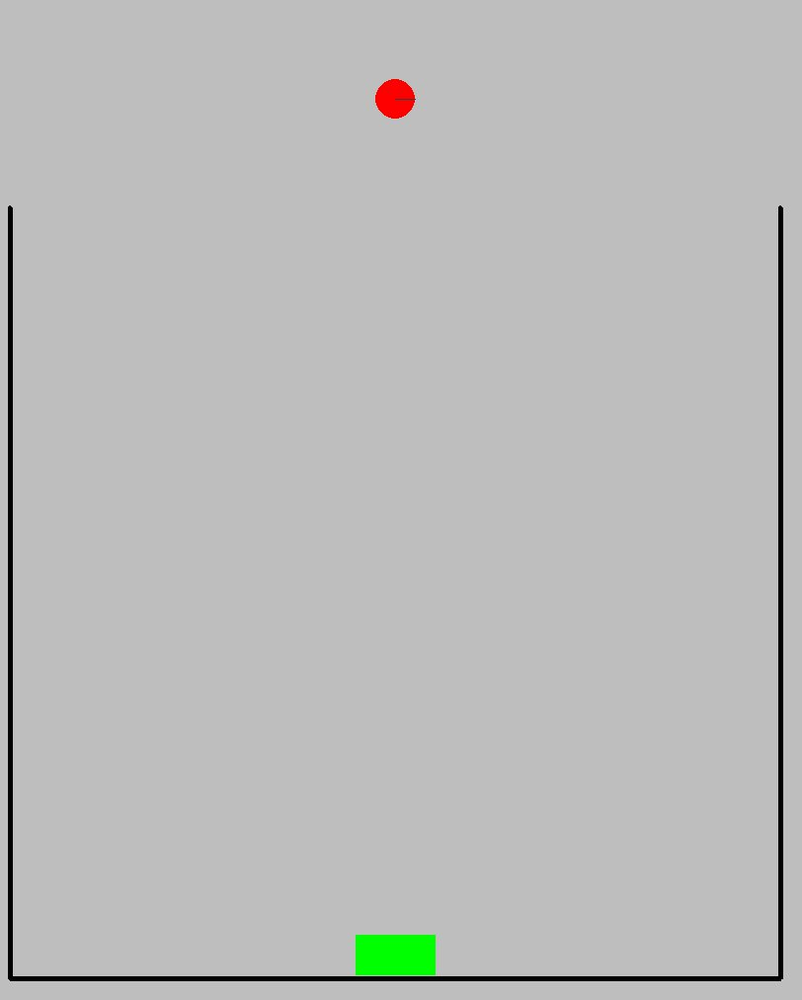
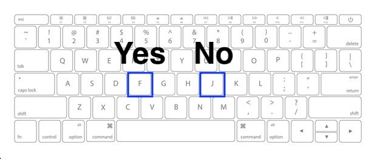
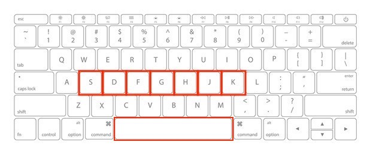

<!DOCTYPE html>
<html>
    <head>
        <title>My Experiment</title>
        <script src="jspsych/jspsych.js"></script>
        <script src="jspsych/plugin-html-keyboard-response.js"></script>
        <script src="https://unpkg.com/@jspsych/plugin-image-keyboard-response@1.0.0"></script>
        <script src="https://unpkg.com/@jspsych/plugin-preload@1.0.0"></script>
        <script src="https://unpkg.com/@jspsych/plugin-survey-likert@1.0.0"></script>
        <link href="jspsych/jspsych.css" rel="stylesheet" type="text/css" />
        <script src="lib/jquery-3.4.1.min.js"></script>
        <link href="css/style.css" rel="stylesheet" type="text/css" />
    </head>
    <body></body>
    <script>
        var jsPsych = initJsPsych({
            on_finish: function() {
                jsPsych.data.displayData();
            }
        });
        
        // Callback for trial response
        var after_response = function(info){
            var key = info.key
            var rt = info.rt
            if (key == ' ') {
                $("#jspsych-survey-likert-next").click();
            }
            var key_value_map = {
                's':'0',
                'd':'1',
                'f':'2',
                'g':'3',
                'h':'4',
                'j':'5',
                'k':'6',
            }
            var val = key_value_map[key]
            $("input[name=Q0][value="+val+"]").prop('checked', true);
        }

        // Timeline and stimuli variables
        var timeline = [];
        var test_stimuli = [
            { stimulus: 'img/scene_cp.jpg', correct_response: 'f', stimulus_width: 200},
            { stimulus: 'img/scene_container.jpg', correct_response: 'j', stimulus_width: 200}
        ]
        var instruction_stimuli = [
            { 
                stimulus : `
                <div style='width:800px;'>
                <p>
                    In this experiment, a scene from a game called Plinko will appear in the center 
                    of the screen. In each scene, you will see a Ball and a Goal. <strong>Your job</strong> is
                    to determine whether the Ball would ever reach the Goal if it was dropped from
                    where it is in the scene. You can see an example scene below.
                </p>
                <p>
                    If the Ball <strong>will</strong> reach the Goal, 
                    press the letter F on the keyboard as fast as you can.
                </p>
                <p>
                    If the Ball <strong>won't</strong> reach the Goal, 
                    press the letter J as fast as you can.
                </p>
                <p> 
                    If you answer correctly, you will receive a bonus compensation depending on how
                    fast you respond. The faster you respond, the higher your bonus. But, only if 
                    your answer is correct!
                </p>
                <div style='width: 700px; margin: auto;'>
                    <div>
                        </img>
                    </div>
                </div>

                <p>Press any key to continue.</p>

                </div>
                `
            },
            {
                stimulus: `
                <div style='width:800px;'>
                <p>
                    For each scene, you will be asked two questions: "Will the ball reach the goal?" and
                    "How certain are you of your answer?".
                </p>
                <p>
                    To answer the first question, press F on your keyboard as fast as you can to 
                    indicate "yes" and press J as fast as you can to indicate "no" as shown below.
                    Remember, for the first question, the faster you answer the higher your bonus 
                    is but only if you answer correctly.
                </p>
                </img>
                <p>
                    To answer the second question, you will choose one of seven options on a scale
                    ranging from "Not Certain" to "Certain" about how sure you are of your answer
                    to the first question. You are not timed on this question; only the first. You will
                    use the S, D, F, G, H, J, and K keys on your keyboard to indicate your answer
                    as shown below. When you're done answering, you will press SPACEBAR to move onto
                    the next trial.
                </p>
                </img>
                </div>
                `
            }
        ]
        
        // Welcome and Preload
        var preload = {
            type: jsPsychPreload,
            auto_preload: true
        }
        var welcome = {
            type: jsPsychHtmlKeyboardResponse,
            stimulus: "Welcome to the experiment. Press any key to begin."
        }

        // Experiment plugins
        var instruction = {
            type: jsPsychHtmlKeyboardResponse,
            stimulus: jsPsych.timelineVariable('stimulus')
        }
        var fixation = {
            type: jsPsychHtmlKeyboardResponse,
            stimulus: '<div style="font-size:60px;">+</div>',
            choices: "NO_KEYS",
            trial_duration: function(){
                return jsPsych.randomization.sampleWithReplacement([250, 500, 750, 1000, 1250, 1500, 1750, 2000], 1)[0];
            },
            data: {
                task: 'fixation'
            }
        }
        var certainty = {
            type: jsPsychSurveyLikert,
            questions: [
                {
                    prompt: "How certain are you of your answer?", 
                    name: 'CertaintyJudgment', 
                    labels: ['Not Certain', ' ', ' ', ' ', ' ', ' ', 'Certain'], 
                    required: true
                }
            ],
            data: {
                task: 'certainty'
            },
            on_start: function(trial) {
                jsPsych.pluginAPI.getKeyboardResponse({
                    callback_function:after_response,
                    valid_responses: ['s','d','f','g','h','j','k',' '],
                    rt_method: 'performance',
                    persist: true
                });
            },
            on_load: function() {
                $("#jspsych-survey-likert-next").hide();
                $("#jspsych-content").append(`
                    <p class="jspsych-survey-likert-statement" style="font-size:14px; padding-top:0px;">
                        (Press SPACEBAR to begin the next trial.)
                    </p>
                    `
                )
            }
        }
        var test = {
            type: jsPsychImageKeyboardResponse,
            stimulus: jsPsych.timelineVariable('stimulus'),
            stimulus_width: jsPsych.timelineVariable('stimulus_width'),
            prompt: `<p><strong>Will the Ball reach the Goal?<strong></p>`,
            choices: ['f', 'j'],
            data: {
                task: 'response',
                correct_response: jsPsych.timelineVariable('correct_response')
            },
            on_finish: function(data){
                data.correct = jsPsych.pluginAPI.compareKeys(data.response, data.correct_response);
            }
        }
        var instruction_procedure = {
            timeline: [instruction],
            timeline_variables: instruction_stimuli
        }
        var test_procedure = {
            timeline: [fixation, test, certainty],
            timeline_variables: test_stimuli,
            randomize_order: true,
            repetitions: 5
        }
        var debrief_block = {
            type: jsPsychHtmlKeyboardResponse,
            stimulus: function() {

                var trials = jsPsych.data.get().filter({task: 'response'});
                var correct_trials = trials.filter({correct: true});
                var accuracy = Math.round(correct_trials.count() / trials.count() * 100);
                var rt = Math.round(correct_trials.select('rt').mean());

                return `<p>You responded correctly on ${accuracy}% of the trials.</p>
                <p>Your average response time was ${rt}ms.</p>
                <p>Press any key to complete the experiment. Thank you!</p>`;

            }
            };

        // Push it all to the timeline
        timeline.push(preload,welcome)
        timeline.push(instruction_procedure, test_procedure)
        timeline.push(debrief_block)

        // Run the experiment
        jsPsych.run(timeline)
    </script>
</html>